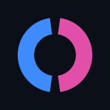

2.1 Test generation
Claude Code, Codex and Playwright Agents draft risk-based plans and specs. A guardrail lint rejects sleeps, brittle selectors and missing assertions before a reviewer ever sees them.
Rotterdam area, Netherlands · No relocation needed
8+ years building test automation architectures, shift-left quality pipelines and AI-assisted QA workflows. I pick the lowest test layer that can prove each risk, wire it into CI as a gate, and publish the evidence, so a release decision rests on numbers rather than on a feeling.
Playwright · TypeScript · Java 21 · REST Assured · Pact · k6 · OpenTelemetry · GitHub Actions · Docker · Claude Code · MCP
I use LLMs where they are strong, drafting, reading and summarising, and keep them away from the one decision they are poor at: what a test should mean. Every proposal passes a deterministic check and a human reviewer before it reaches CI.
Claude Code, Codex and Playwright Agents draft risk-based plans and specs. A guardrail lint rejects sleeps, brittle selectors and missing assertions before a reviewer ever sees them.
Agents read CI logs, traces and diffs, group failures by likely cause and draft a first diagnosis: product bug, test bug or environment. The engineer confirms; the agent never marks a test green.
Features built on models get tests too. Promptfoo suites score outputs against rubrics and regressions in CI, so a prompt or model change is reviewed like a code change.
MCP servers give agents the same safe interfaces people use. TestLease exposes exclusive test account leases over MCP, so an agent running tests cannot collide with a CI worker.
In practice: TestPlan Studio ↗ turns an application description into a risk-based plan with Claude, compiles the browser scenarios into a linted Playwright spec, and runs it on GitHub Actions.
Verified end to end on Claude Opus 5 against the lab
Fact lines are read from each project's own CI output at every deploy, so they cannot drift from reality.
A reference architecture for choosing the right test layer for each risk.
A small TypeScript service tested the way a production system should be: table-driven unit tests, in-process API tests, Pact consumer-driven contracts, a real PostgreSQL through Testcontainers, Playwright with axe-core, k6 performance budgets, Promptfoo evaluations and OpenTelemetry traces, run as parallel CI jobs with architecture decision records.
9 quality layers · live evidence page published by CI
Exclusive, expiring leases on shared test resources, for CI workers and AI agents.
Parallel workers fight over shared accounts and sandboxes, and the flakiness looks like application bugs. TestLease gives each worker an exclusive lease: one owner per resource enforced by the database, a heartbeat for slow workers and a TTL that frees crashed ones, fair waiting, quarantine for contaminated accounts and an event trail as evidence. Secrets never leave the server. Ships as an HTTP API, Playwright fixtures, a CLI and an MCP server.
7 npm packages at v0.2.0 · 129 automated tests · 8 Chromium workers on 3 accounts, 0 overlaps · 15 ADRs · Docker image on GHCR · Apache-2.0
A modular Java 21 web and API automation framework, consumed as a dependency instead of forked.
Java teams start each test project by copying the plumbing from the last one, and the copies drift. Trident is built around a single Cucumber runner with the REST Assured API layer shipped and web and mobile to follow. Generate a project from the archetype, depend on the modules you need, write feature files. It is developed against a 2005 JSP banking app with no test hooks, and a separate showcase adopts it from Maven Central against an unrelated application.
8 modules on Maven Central at v1.0.0 · 13 scenarios across 3 suites · 8s from archetype:generate to a green suite · 16 ADRs

Open to Senior QA, SDET and Quality Engineering roles in the Netherlands, on-site, hybrid or remote.